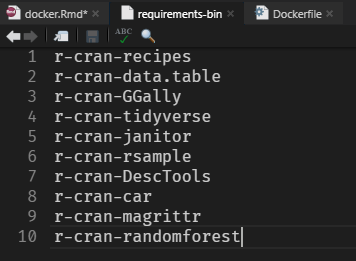

FROM rocker/r-apt:bionicdocker 파일을 구울 때 사전에 패키지를 설치하고 싶으면 install.packages를 이용하면 되는데, 이 경우 너무 많은 시간이 걸린다. docker 파일을 굽고 서버에서 install.packages를 해도 마찬가지다. 해결책을 찾아보니 pre-compiled binary package를 이용하면 설치 시간을 10배 이상 단축할 수 있는 것 같다.
잠시 운영체제에 대한 설명으로 넘어가면 linux에서는 package 관리 방법이 두가지가 있는데 source package와 binary package다. source package는 소스 코드가 있는 패키지로 컴파일 과정을 통해 binary package로 만드는 과정을 거쳐야만 시행될 수 있다. 설치할 때 컴파일 과정도 함께 진행되어야 하므로 설치 시간이 길고, 컴파일 작업 과정에서 오류가 생길 수 있다. 반면 binary package는 컴파일이 완료된 바이너리 파일이 들어있는 패키지이다. 사전에 컴파일이 되어 있으므로, 소스 패키지에 비해 설치 시간이 짧고, 오류가 발생될 가능성이 적다.
대부분 바이너리 패키지를 이용하지만 소프트웨어를 원하는데로 수정하고 싶을 때는 소스 패키지를 이용한다. 바이너리 패키지는 설치시간이 비교적 짧지만 바이너리 패키지를 실행하기 위해서는 다른 특정 패키지가 필요할 수 있는데, 이를 패키지 의존성이라고 한다.
패키지 의존성을 해결해주는, 즉 패키지 간의 연결관계를 파악하고 자동으로 필요한 패키지를 설치해주는 도구가 존재하는데 apt-get, apt 등이 있다.
다시 R로 넘어가서 linux에 대한 이해를 바탕으로 유추를 해보면 docker 파일을 구울 때 install.packages는 source package에 해당하고, pre-compiled binary package는 binary package를 의미하는 것 같다. 즉 binary package의 장점을 이용해서 속도가 빨라지는 것이라고 이해하면 될 것 같다.
Build docker file
rocker에서 사전에 구워진 우분투 버전 r-apt를 불러오기
WORKDIR : ‘RUN’(Shell script 또는 명령을 실행), ‘CMD’(컨테이너가 실행되었을 때 명령이 실행), ‘ENTRYPOINT’(컨테이너가 시작되었을 때 스크립트 실행) 명령이 실행될 작업 디렉토리 설정하기
WORKDIR /appRUN apt-get update : 운영체제에서 사용가능한 패키지 및 버전에 대한 정보 업데이트
apt-get install -y libxml2-dev : libxml2 패키지 설치
RUN apt-get update && \
apt-get install -y libxml2-devrequirement-bin.txt 파일을 Dockerfile이 있는 폴더에 위치시켜야 한다.
requirement-bin.txt 파일 안에는 다음과 같이 패키지 명을 입력해준다.

#COPY ./requirements-bin.txt .
RUN cat requirements-bin.txt | xargs apt-get install -y -qqsource package로 설치하고 싶을 경우 requirements-src.R 파일을 따로 만들어준다.
requirements-src.R 파일 안에는 다음과 같이 입력해준다.

# Install remaining packages from source
COPY ./requirements-src.R .
RUN Rscript requirements-src.R# Clean up package registry
RUN rm -rf /var/lib/apt/lists/*EXPOSE : 호스트와 연결할 포트 번호 지정
CMD : 컨테이너가 실행되었을 때 명령이 실행
#COPY ./src /app
EXPOSE 5000
CMD ["Rscript", "Server.R"]Full code
FROM rocker/r-apt:bionic
WORKDIR /app
RUN apt-get update && \
apt-get install -y libxml2-dev
# https://stackoverflow.com/questions/51500385/how-to-speed-up-r-packages-installation-in-docker
# Install binaries (see https://datawookie.netlify.com/blog/2019/01/docker-images-for-r-r-base-versus-r-apt/)
#COPY ./requirements-bin.txt .
RUN cat requirements-bin.txt | xargs apt-get install -y -qq
# Install remaining packages from source
COPY ./requirements-src.R .
RUN Rscript requirements-src.R
# Clean up package registry
RUN rm -rf /var/lib/apt/lists/*
#COPY ./src /app
EXPOSE 5000
CMD ["Rscript", "Server.R"]Reference
linux package 설명
https://bradbury.tistory.com/227?category=768468
docker tutorial
https://jsta.github.io/r-docker-tutorial/
docker build 명령어 요약
https://blog.d0ngd0nge.xyz/docker-dockerfile-write/
rocker에서 package 빠르게 설치해서 굽는 법
https://stackoverflow.com/questions/51500385/how-to-speed-up-r-packages-installation-in-docke
r-base vs r-apt 속도 비교
https://datawookie.dev/blog/2019/01/docker-images-for-r-r-base-versus-r-apt/